Let's use what we've learned to create a haunted house. We will only use Three.js primitives as geometries, the textures in the /static/textures/ folder, and one or two new features.
We will create an elementary house composed of walls, a roof, a door, and some bushes. We will also produce graves in the garden. Instead of visible ghosts made of sheets, we will simply use multicolor lights floating around and passing through the walls and the floor.
One beginner mistake we always make when creating something using primitives is using random measures. One unit in Three.js can mean anything you want.
Suppose you are creating a considerable landscape to fly above. In that case, you might think of one unit as one kilometer. If you are building a house, you might think of one unit as one meter, and if you are making a marble game, you might think of one unit as one centimeter.
Having a specific unit ratio will help you create geometries. Let's say you want to make the door. You know that a door is slightly taller than you, so it should reach around 2 meters.
For those using imperials units, you'll have to do the conversion.
The starter is only composed of a floor, a sphere, some lights (way too intense for a haunted house), and shadows aren't even working.
We will have to create the house all by ourselves, tweak the current lights for a better ambiance, add the shadows, and the rest.
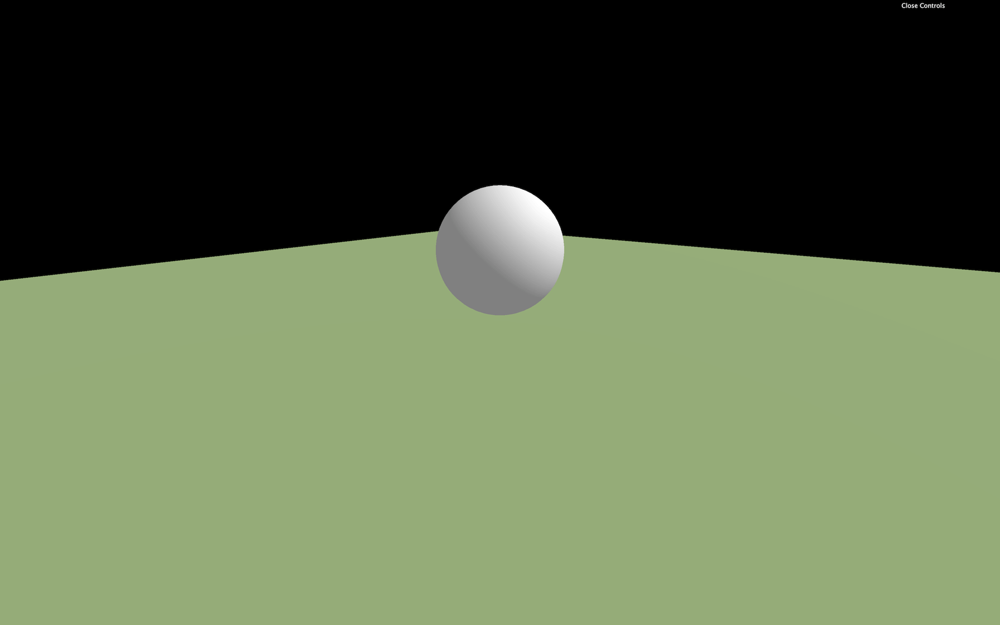
First, let's remove the sphere and create a tiny house. We can leave the floor.
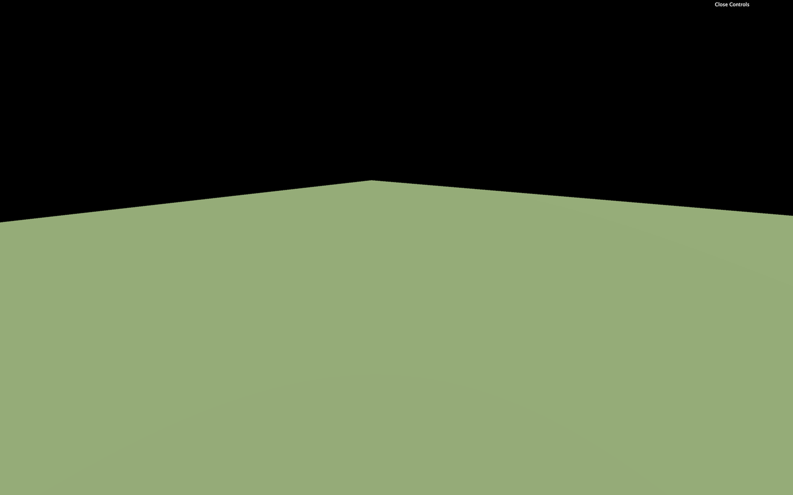
Instead of putting every object composing that house in the scene, we will first create a container just in case we want to move or scale the whole thing:
Then we can create the walls with a simple cube and add it to the house. Don't forget to move the walls up on the y axis; otherwise it will be half inside the floor:
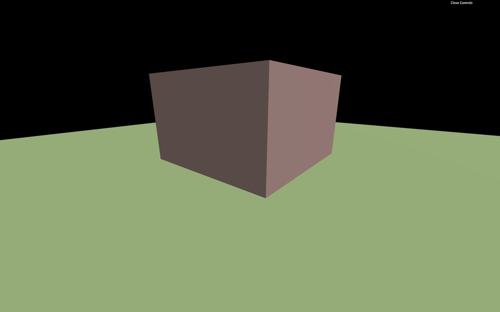
We chose 2.5 for the height because it would seem like a normal height for the ceiling. We also chose '#ac8e82' for the color, but it's temporary, and we will replace those colors with textures later.
For the roof, we want to make a pyramid shape. The problem is that Three.js doesn't have this kind of geometry. But if you start from a cone and reduce the number of sides to 4, you'll get a pyramid. Sometimes you just have to deflect basic features usages:
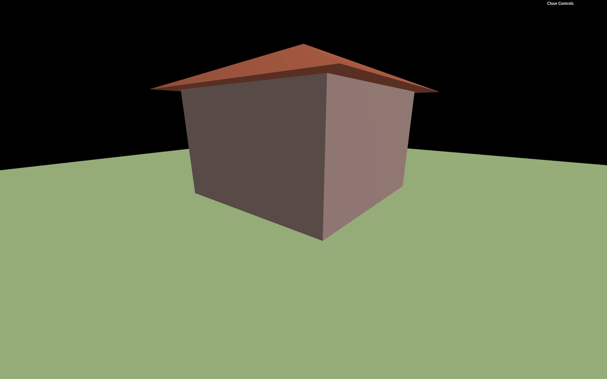
Finding the right position and the right rotation might be a little hard. Take your time, try to figure out the logic behind the values, and don't forget that Math.PI is your friend.
As you can see, we left 2.5 + 0.5. We could have written 3 but it's sometime better to visualize the logic behind the value. 2.5, because the roof walls are 2.5 units high and 0.5 because the cone is 1 unit high (and we need to move it up to half its height).
We will use a simple plane for the door as we are going to use the beautiful door texture we used in a previous lesson.
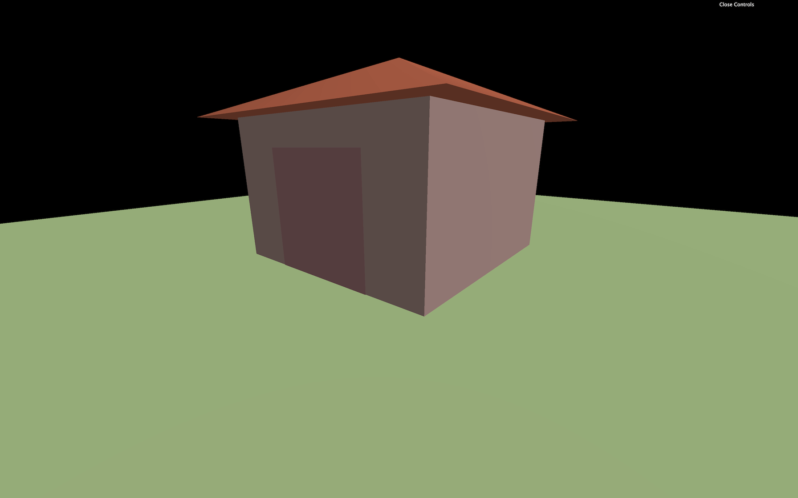
We don't know yet if the plane has the right size, but we can fix that later when we have the textures working.
As you can see, we move the door on the z axis to stick it to the wall but we also added 0.01 units. If you don't add this small value, you'll have a bug we already saw in a previous lesson called z-fighting. Z-fighting happens when you have two faces in the same position (or very close). The GPU doesn't know which one is closer than the other, and you get some strange visual pixel fighting.
Let's add some bushes. Instead of creating one geometry for each bush, we will create only one, and all meshes will share it. The result will be visually the same, but we'll get a performance improvement. We can do the same with the material.
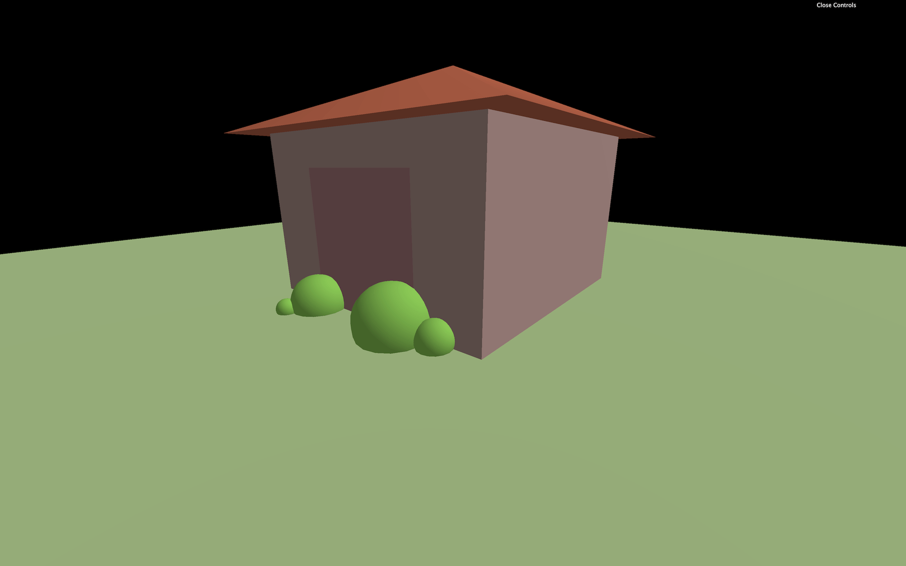
It does take too long to place and scale all these objects directly in the code. In a later lesson, we will learn how to use a 3D software to create all of this.
We won't add too many details to the house because we must move forward, but feel free to pause and add anything you want like low walls, an alley, windows, a chimney, rocks, etc.
Instead of placing each grave manually, we are going to create and place them procedurally.
The idea is to place the graves randomly on a circle around the house.
First, let's create a container just in case:
Like in the 3D Text lesson where we created multiple donuts with one geometry and one material, we are going to create one BoxGeometry and one MeshStandardMaterial that will be shared amongst every graves:
Finally, let's loop and do some mathematics to position a bunch of graves around the house.
We are going to create a random angle on a circle. Remember that a full revolution is 2 times π. Then we are going to use that angle on both a sin(...) and a cos(...). This is how you position things on a circle when you have the angle. And finally we also multiply those sin(...) and cos(...) results by a random value because we don't want the graves to be positioned on a perfect circle.
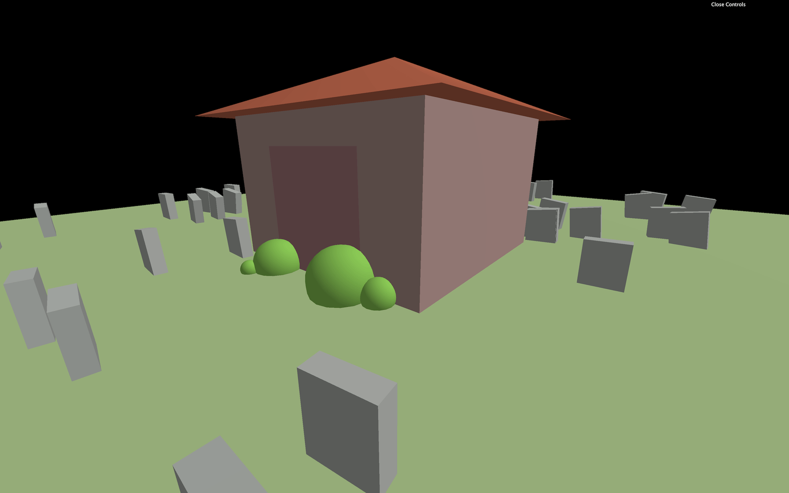
We have a pretty cool scene, but it's not that scary yet.
First, let's dim the ambient and moon lights and give those a more blue-ish color:
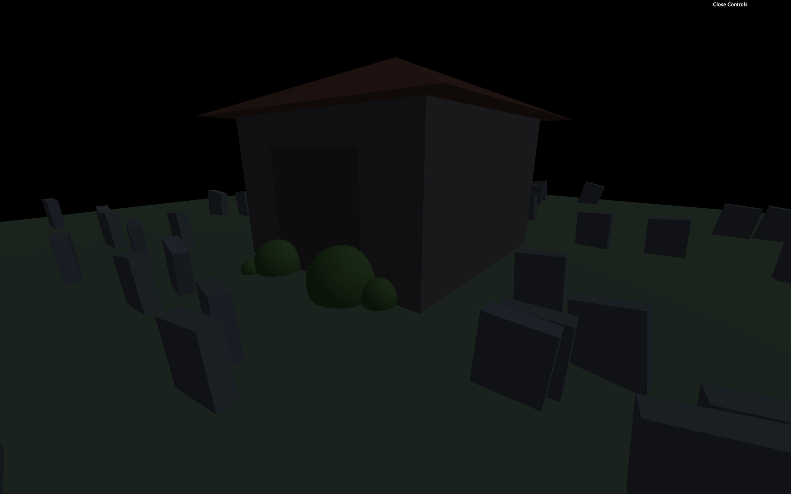
We can't see much right now. Let's also add a warm PointLight above the door. Instead of adding this light to the scene, we can add it to the house:
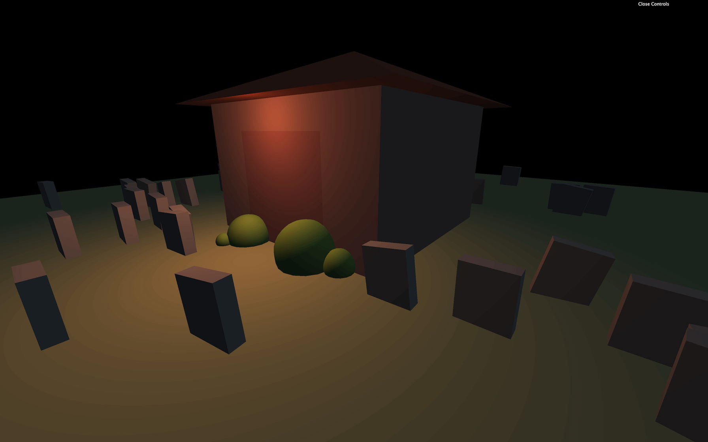
In horror movies, they always use fog. The good news is that Three.js supports it already with the Fog class.
The first parameter is the color, the second parameter is the near (how far from the camera does the fog start), and the third parameter is the far (how far from the camera will the fog be fully opaque).
To activate the fog, add the fog property to the scene:
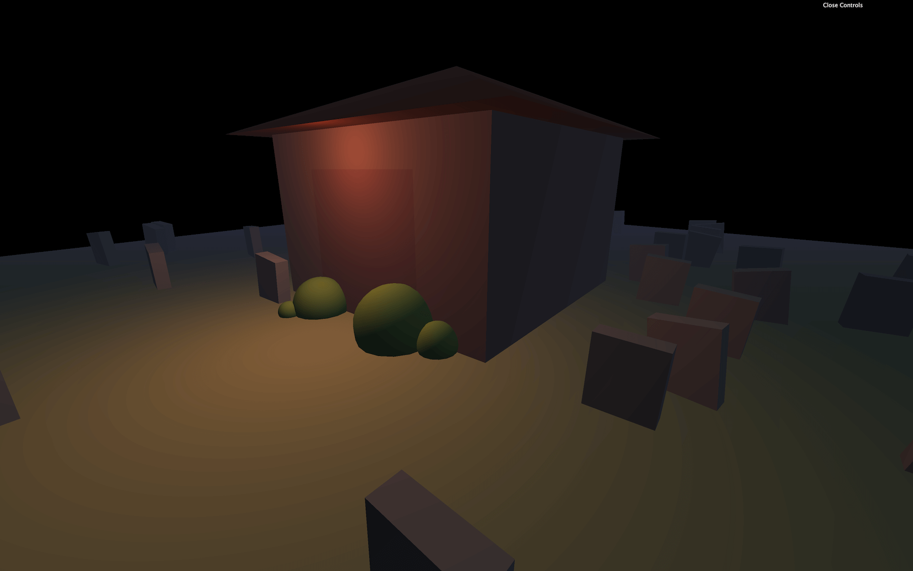
Not bad, but we can see a clean cut between the graves and the black background.
To fix that, we must change the clear color of the renderer and use the same color as the fog. Do that after instantiating the renderer:
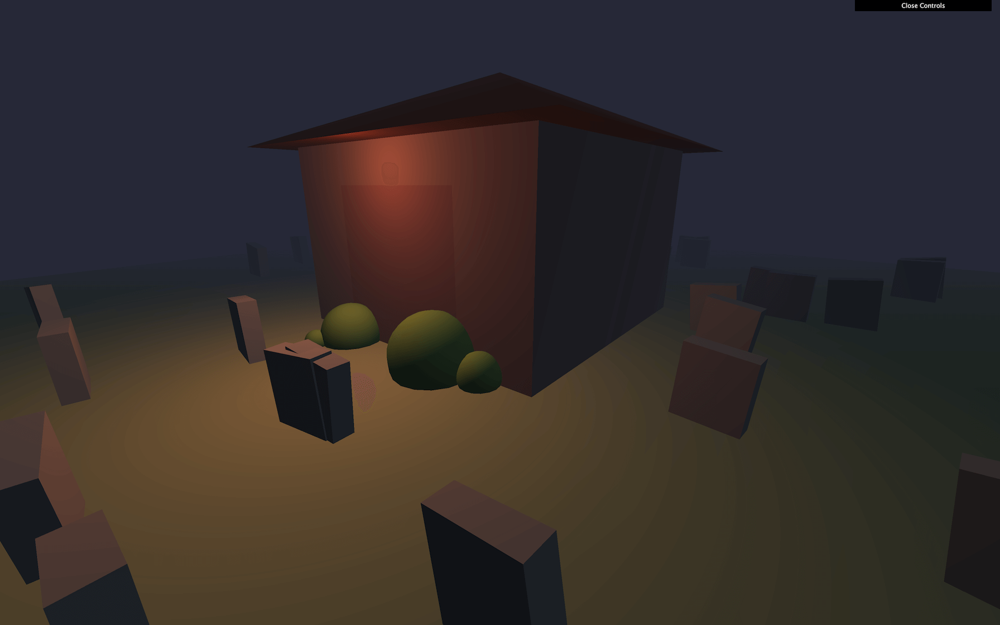
Here's a slightly scarier scene.
For even more realism, we can add textures. The textureLoader is already in the code.
Let's start with something we already know and load all the door textures:
Then we can apply all those textures to the door material. Don't forget to add more subdivisions to the PlaneGeometry, so the displacementMap has some vertices to move. Also, add the uv2 attribute to the geometry for the aoMap as we did in the Materials lesson.
You can access the door's geometry by using mesh.geometry:
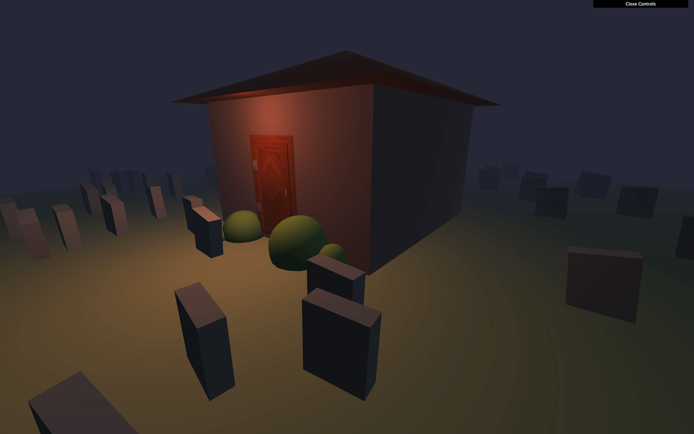
There you go! That's a more realistic door.
Now that we have the textures, you realize that the door is a little too small. You can simply increase the PlaneGeometry sizes:
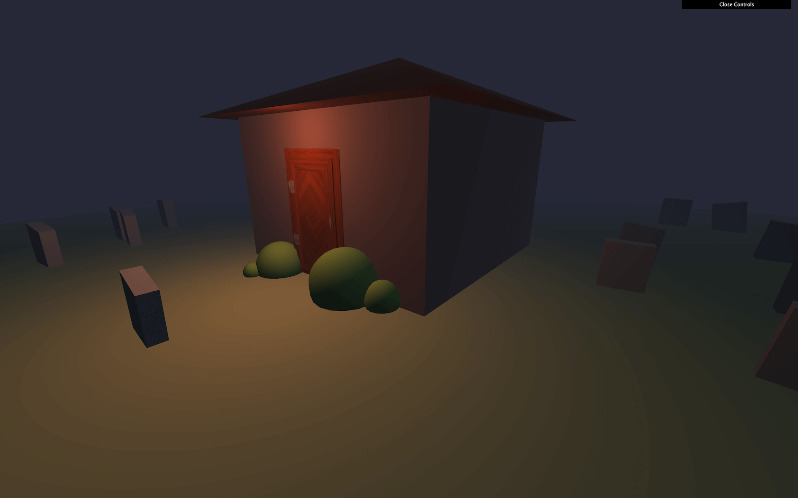
Let's do the same for the walls using the textures on the /static/textures/bricks/ folder. We don't have as many textures as for the door, but it's not a problem. We don't need an alpha texture, and the wall has no metal in it, so we don't need a metalness texture either.
Load the textures:
Then we can update our MeshStandardMaterial for the wall. Don't forget to remove the color and add the uv2 attribute for the ambient occlusion.
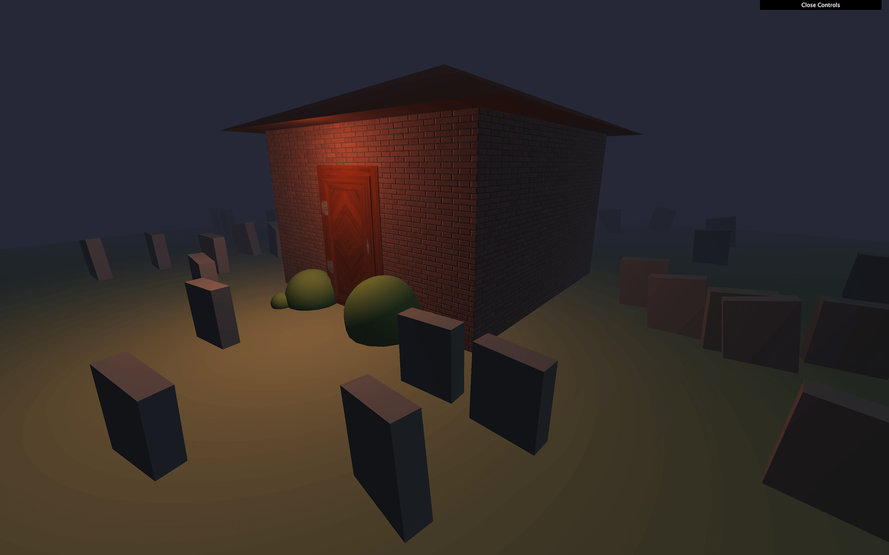
Same deal as for the walls. The grass textures are located in the /static/textures/grass/ folder.
Load the textures:
Update the MeshStandardMaterial of the floor and don't forget to remove the color and add the uv2 attribute for the ambient occlusion:
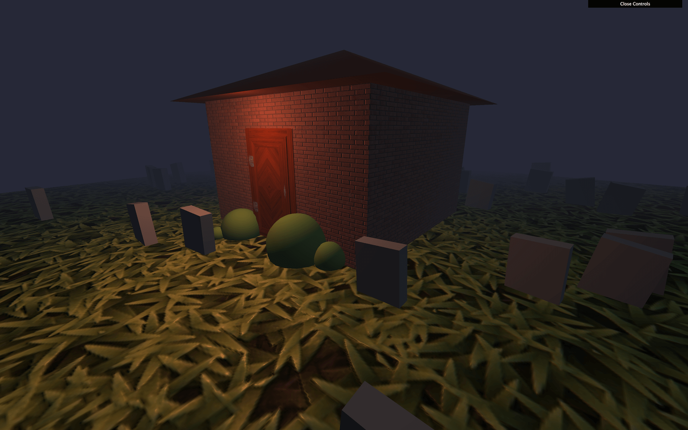
The texture is too large. To fix that, we can simply repeat each grass texture with the repeat property:
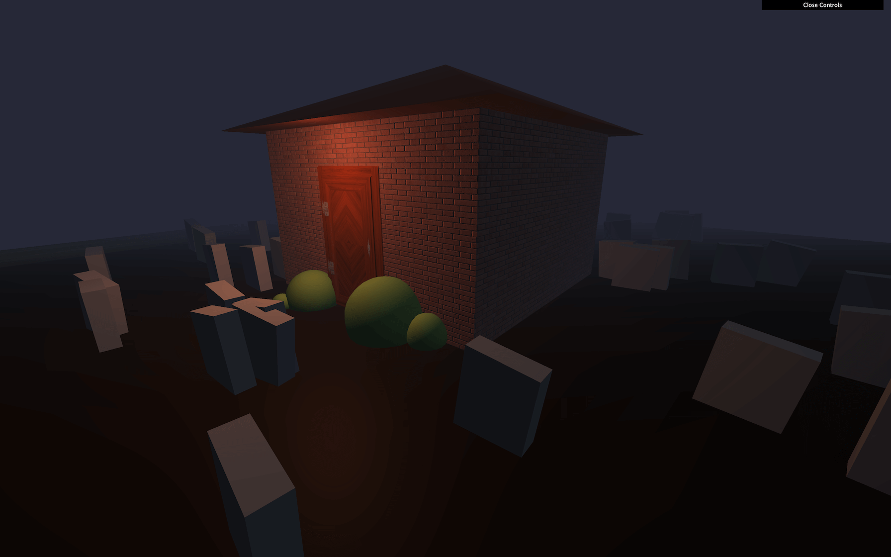
And don't forget to change the wrapS and wrapT properties to activate the repeat:
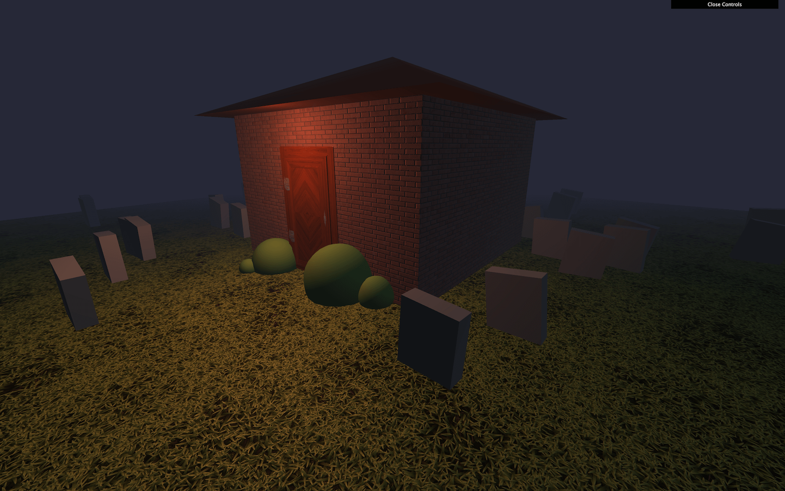
For the ghosts, let's keep things simple and do with what we know.
We are going to use simple lights floating around the house and passing through the ground and graves.
Now we can animate them using some mathematics with a lot of trigonometry:
Finally, to add more realism, let's add shadows.
Activate the shadow map on the renderer:
Activate the shadows on the lights that you think should cast shadows:
Go through each object of your scene and decide if that object can cast and/or receive shadows:
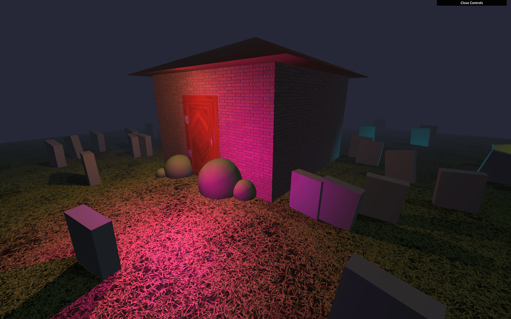
The scene looks much better with these shadows, but we should optimize them anyway.
A good thing would be to go through each light, create camera helpers on the light.shadowMap.camera, and make sure the near, the far, the amplitude or the fov fit nicely. But instead, let's use the following values that should be just right.
We can also reduce the shadow map render sizes to improve performances:
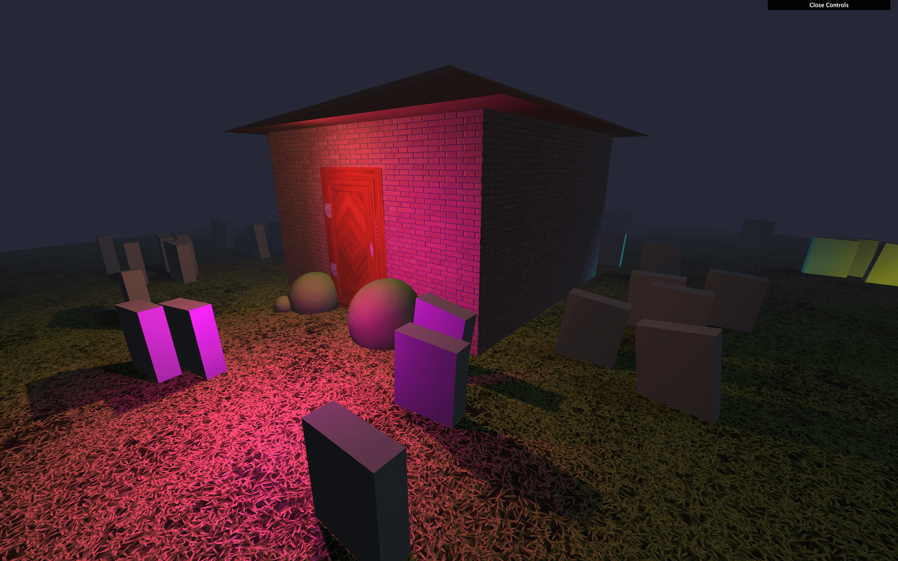
This process is long, but it's essential. We are already flirting with performance limitations, and the haunted house might not even work at 60fps on mobile. We will see more optimization tips in a future lesson.
That's it for the lesson, but you can try to improve what we did. You can add new elements in the scene, replace the ghosts with real 3D ghosts by using Three.js primitives, add names on the grave, etc.